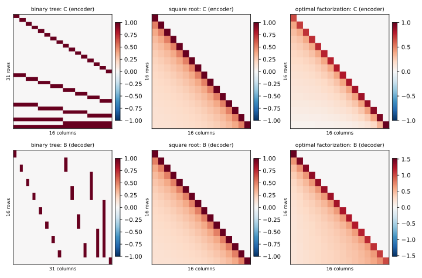
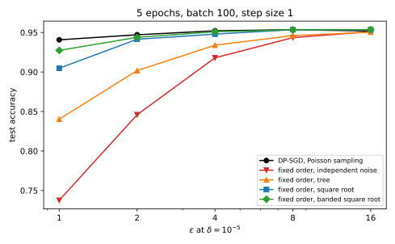

39 DP-FTRL and matrix factorization
39.1 Why this matters
Stochastic gradient descent (SGD) with differential privacy (DP), the DP-SGD of this part, gets much of its privacy from Poisson sampling: each record enters a batch only with probability \(q\), and the accountant credits the run for the attacker’s uncertainty about whether the record was used at all (Amplification by subsampling). Many pipelines cannot honestly claim it: data loaders shuffle and cut fixed batches, streams arrive in order, and a federated server cannot choose which phones check in. The Poisson accountant can then understate \(\varepsilon\) considerably, and giving up amplification is expensive: on this part’s running example, for \(\varepsilon = 2\) over five passes through the data, the noise multiplier has to grow from 0.928 to 4.458, and test accuracy falls from 0.9460 to 0.8941.
How do you train privately without random batches, and can correlated noise beat independent noise? It can, by a lot. The first algorithm to show it ran the follow the regularized leader (FTRL) optimizer on noisy gradient sums released through a binary tree, and is called DP-FTRL. Its modern form, the matrix factorization mechanism, contains the tree as a special case, and on the running example it closes nearly all of the gap to amplified DP-SGD without any sampling.
The one idea: training releases running sums of gradients, so put the noise where the running sums need it. Noise added at one step may partly cancel the noise added before it; the price is that each record’s gradient then has to be hidden in several noisy quantities at once.
39.2 Training is a stream of prefix sums
Plain gradient descent, without momentum, adds up its steps. If \(x_t\) is the sum of the clipped gradients of the batch at step \(t\), each of length at most the clipping norm \(C\), and \(\hat x_t\) is its noisy version, then after \(t\) steps with step size \(\eta\) and batch size \(B\) \[w_{t+1} = w_0 - \frac\eta B\hat S_t, \qquad \hat S_t = \hat x_1 + \dots + \hat x_t. \tag{39.1}\] Every model along the way is a fixed function of the noisy prefix sums \(\hat S_t\), so releasing those privately makes every model private, and the noise in a model is the noise in its prefix sum. FTRL with a quadratic regularizer produces the same weights. All \(T\) prefix sums must be released, not just the last, because training is adaptive: the gradient at step \(t\) is computed at \(w_t\), which depends on the earlier sums.
Two mechanisms suggest themselves. Independent noise on each step, which is DP-SGD without amplification, hides a record’s single gradient with noise of the size of one gradient, but the noise in \(\hat S_t\) is a sum of \(t\) independent terms, a random walk whose standard deviation grows like \(\sqrt t\). Independent noise on each prefix sum keeps every error the same size, but a record at step 1 appears in all \(T\) sums, so the noise must be \(\sqrt T\) times larger to hide it, and every sum is as bad as the worst sum of the first mechanism. Neither uses the structure of the problem.
Take one epoch of the running example, \(T = 100\) steps, at \(\varepsilon = 2\) and \(\delta = 10^{-5}\). Independent noise needs a noise scale of 1.994 per step, in units of \(C\), so the final prefix sum carries noise of standard deviation 19.94. DP-SGD with Poisson sampling at \(q = 0.01\) and the same \(\varepsilon\) needs only \(\sigma = 0.827\), and its final prefix sum carries 8.27: amplification buys a factor of 2.4. The rest of the chapter shows that correlated noise can beat even that without sampling.
39.3 The matrix mechanism
Releasing all prefix sums is a linear map, \(S = Ax\), where \(A\) is the \(T \times T\) lower-triangular matrix of ones and \(x\) stacks the \(x_t\) as rows. The matrix mechanism splits \(A\) into two factors, \(A = LR\), adds Gaussian noise \(z\) in the middle, and releases \[\hat S = L(Rx + z) = Ax + Lz, \tag{39.2}\] where \(z\) has independent entries with standard deviation \(sC\), and \(s\) is the noise scale, the analogue of DP-SGD’s noise multiplier. The encoder \(R\) decides what gets noised; the decoder \(L\) recovers the prefix sums from it.
Privacy lives in the columns of \(R\). A record that takes part in step \(\tau\) changes row \(\tau\) of \(x\) by a gradient \(g\) of length at most \(C\), which moves \(Rx\) by column \(\tau\) of \(R\) times \(g\). Recall that the privacy of a Gaussian mechanism depends only on one ratio, the sensitivity divided by the noise standard deviation, called \(\mu\) (The Laplace and Gaussian mechanisms). So the mechanism has \[\mu = \frac{\operatorname{sens}(R)}{s}, \qquad \operatorname{sens}(R) = \max_j\|r_j\|, \tag{39.3}\] the length of the longest column \(r_j\). To meet an \((\varepsilon, \delta)\) target, find the largest admissible ratio \(\mu(\varepsilon, \delta)\) from the exact Gaussian calibration, for example \(\mu(2, 10^{-5}) = 0.502\) and \(\mu(8, 10^{-5}) = 1.666\), and set \(s = \operatorname{sens}(R)/\mu\).
Error lives in the rows of \(L\). The error in \(\hat S_t\) is row \(t\) of \(L\), written \(\ell_t\), times the noise, a weighted sum of independent normals, so its standard deviation in each coordinate is \(sC\|\ell_t\|\). At a fixed privacy level that is \((C/\mu)\,e_t\), with \[e_t = \operatorname{sens}(R)\,\|\ell_t\| \tag{39.4}\] the error per unit of privacy. Multiplying \(R\) by 2 and dividing \(L\) by 2 changes nothing, so only the product matters, and the best factorization balances short columns against short rows. Independent noise on each step is \(R = I\), \(L = A\): columns of length 1, rows of length \(\sqrt t\). Noise on each prefix sum is \(R = A\), \(L = I\), the opposite extreme.
Does this survive adaptive training, where later gradients depend on earlier outputs? Yes, if both factors are lower-triangular (Denisov et al. 2022, Theorem 2.1). Then row \(j\) of \(Rx + z\) depends only on steps up to \(j\) and can be released at step \(j\). Before the record’s step the outputs have the same distribution on both datasets, and from then on the record shifts the remaining rows by column \(\tau\) times \(g\), so the accounting is the same as for inputs fixed in advance. A factor with entries above the diagonal would need noise or data from future steps.
When \(R\) is square and invertible, the mechanism is noisy SGD with correlated noise: it adds \(\zeta = R^{-1}z\) to the gradients, each step’s noise a fixed combination of the noise drawn so far. Neighbours here leave the record’s slot in the public data order empty; if they replace the record instead, every sensitivity doubles.
How good can a factorization be? No factorization can push the root-mean-square of \(e_t\) over a run below the trace norm of \(A\) (the sum of its singular values) divided by \(T\): 2.18 at \(T = 100\) and 3.63 at \(T = 10{,}000\). Table 39.1 shows how far each mechanism is from that bound; the next two sections explain the rows.
| Mechanism | \(T = 100\): sens\((R)\) | root-mean-square \(e_t\) | max \(e_t\) | \(T = 10{,}000\): sens\((R)\) | root-mean-square \(e_t\) | max \(e_t\) |
|---|---|---|---|---|---|---|
| Independent noise (\(R = I\)) | 1 | 7.11 | 10.00 | 1 | 70.71 | 100.00 |
| Noise on prefix sums (\(R = A\)) | 10 | 10.00 | 10.00 | 100 | 100.00 | 100.00 |
| Binary tree | 2.828 | 5.05 | 6.93 | 3.873 | 9.84 | 13.96 |
| Square root | 1.591 | 2.37 | 2.53 | 2.000 | 3.84 | 4.00 |
| Optimal (Frobenius) | 1 | 2.24 | 2.45 | — | — | — |
| Lower bound | — | 2.18 | — | — | 3.63 | — |
From \(T = 100\) to \(T = 10{,}000\), a hundredfold longer run, the independent-noise error grows tenfold, the tree’s by a factor of 2 and the square root’s by a factor of 1.6.
39.4 Tree aggregation and DP-FTRL
The first mechanism with error far below \(\sqrt T\) was the binary tree, from the theory of private running counts (Dwork, Naor, Pitassi & Rothblum 2010; Chan, Shi & Song 2010). Build a tree over the steps: each leaf is one step, each node above covers a block of \(2, 4, 8, \dots\) consecutive steps. Release every node’s gradient sum with independent noise. Any prefix \(1, \dots, t\) is the union of one node for each 1 in the binary expansion of \(t\): \(7 = 4 + 2 + 1\) uses the nodes covering steps 1 to 4, 5 and 6, and 7. So a prefix sum collects at most \(\log_2 t + 1\) noise terms instead of \(t\). The price is that each step sits in one node per level, so its column in \(R\) has length \(\sqrt{L_T}\), with \(L_T = \lceil\log_2 T\rceil + 1\) levels, and the noise must be that much larger.
That trade is a large win for long runs: at \(T = 10{,}000\) the root-mean-square error is 9.84 against 70.71 for independent noise. But the error jumps around: the prefix \(127 = 1111111_2\) uses seven nodes and \(128\) uses one (Figure 39.2, left). And the encoder is wasteful: few prefixes use the top nodes, yet every step pays for being in them.
Kairouz et al. (2021) ran FTRL on prefix sums released by the tree, with momentum and periodic restarts, and called it DP-FTRL. They report that it compares favourably with amplified DP-SGD in their experiments while allowing much more flexible data access, and Xu et al. (2023) used it to train production keyboard language models in federated learning.
39.5 The square-root factorization
A natural symmetric choice is \(L = R\), a lower-triangular matrix whose square is \(A\). It exists and has a closed form, because lower-triangular matrices that are constant along each diagonal multiply like power series in a variable \(x\), coefficient by coefficient. \(A\), all ones, is the series \(1 + x + x^2 + \dots = 1/(1 - x)\), so its square root is the series \((1 - x)^{-1/2}\), whose coefficients are \[r_k = \binom{2k}k4^{-k}: \qquad r = 1, \tfrac12, \tfrac38, \tfrac5{16}, \tfrac{35}{128}, \dots, \tag{39.5}\] computed by \(r_0 = 1\), \(r_k = r_{k-1}(2k - 1)/(2k)\). The first column of \(R\) is the longest and the last row of \(L = R\) the longest, both with squared length \(\sum_{k<T}r_k^2\), so that sum is both \(\operatorname{sens}(R)^2\) and the largest error per unit of privacy. It grows like \(\ln(T)/\pi\): logarithmic, like the tree’s error, but much smaller than the tree’s at both horizons of Table 39.1, and far below \(\sqrt T\). At \(T = 100\), \(\sum r_k^2 = 2.531\), so \(\operatorname{sens}(R) = 1.591\) and the final prefix sum’s error is 2.53, a quarter of independent noise’s 10.
Seen as noisy SGD, the noise added to step \(t\)’s gradient comes from \(R^{-1}\), the series \((1 - x)^{1/2} = 1 - \frac12x - \frac18x^2 - \frac1{16}x^3 - \dots\): \[\zeta_t = z_t - \tfrac12z_{t-1} - \tfrac18z_{t-2} - \tfrac1{16}z_{t-3} - \dots, \tag{39.6}\] fresh noise minus a decaying share of the noise already injected. Each step’s noise is slightly larger than independent noise, with standard deviation tending to \(\sqrt{4/\pi} = 1.128\) times the noise scale, but the negative coefficients pull the accumulated noise back towards zero, so the running sums no longer drift like a random walk (Figure 39.1).

The square root is close to optimal: its root-mean-square error, 2.37 at \(T = 100\) and 3.84 at \(T = 10{,}000\), is within 9% and 6% of the lower bound. The best factorization, computed by a fixed-point iteration (Denisov et al. 2022), reaches 2.24 at \(T = 100\), but each iteration costs cubic time in \(T\), so the square root, free and nearly as good, is the usual default for long runs (Figure 39.2). The two even look alike (Figure 39.3).


39.6 Several participations
Training for \(E\) epochs puts a record’s gradient into \(E\) steps, each through a different column of \(R\), and the shifts add before the norm is taken. When all inner products between columns are nonnegative (as for any \(R\) with nonnegative entries: the identity, the tree, the square root), the worst case is the same gradient every time, and the sensitivity is the length of the sum of the record’s columns, maximized over the possible participation patterns.
For independent noise the columns are orthogonal, so \(E\) participations cost \(\sqrt E\), the usual composition of Gaussian mechanisms. For the square root, columns of nearby steps overlap and point in similar directions, so a record that appears again lands on top of its earlier contribution and the sensitivity grows faster than \(\sqrt E\). The tree is worse still: a node covering many steps holds several participations of the same record, and their contributions add inside it.
Banding fixes this. Keep only the first \(b\) diagonals of the square-root encoder, and make sure any two participations of a record are at least \(b\) steps apart (\(b\)-min-separation). Then the columns of different participations do not overlap at all, the cross terms vanish, and the sensitivity is back to at most \(\sqrt E\) times the longest column. The banded decoder, \(L = AR^{-1}\), is less accurate than the square root’s for a single participation, because the band no longer spreads the noise across the whole run, but with many participations the sensitivity saving dominates. Table 39.2 uses the running example’s order: 100 steps per epoch, each record exactly 100 steps apart, band \(b = 100\).
| Epochs \(E\) | Independent: sens / final \(e_T\) | Tree | Square root | Banded square root |
|---|---|---|---|---|
| 1 | 1.000 / 10.00 | 2.828 / 4.90 | 1.591 / 2.53 | 1.591 / 2.53 |
| 2 | 1.414 / 20.00 | 4.690 / 8.12 | 2.531 / 4.20 | 2.250 / 4.16 |
| 5 | 2.236 / 50.00 | 8.944 / 21.91 | 5.080 / 8.86 | 3.558 / 8.56 |
| 10 | 3.162 / 100.00 | 16.186 / 39.65 | 9.154 / 16.54 | 5.031 / 15.69 |
| 20 | 4.472 / 200.00 | 30.430 / 74.54 | 17.191 / 32.09 | 7.115 / 29.85 |
At 20 epochs the banded sensitivity is \(\sqrt{20} \times 1.591 = 7.115\), while the full square root’s is 17.191, more than twice as large. The final errors are closer, 29.85 against 32.09, because the banded decoder is less accurate; both are between a sixth and a seventh of independent noise’s 200.
So the data order is part of the mechanism. A fixed permutation, drawn independently of the data and repeated every epoch, guarantees a separation of exactly \(n/B\) steps; reshuffling every epoch can put a record at the end of one epoch and the start of the next, one step apart, which breaks the banded bound. The order must be fixed in the analysis, but need not be random. Banded factorizations can also use amplification by sampling when it is available (Choquette-Choo et al. 2023).
39.7 The running example: matrix mechanisms against DP-SGD
Does less noise in the prefix sums mean better models? Train the running example (the network of DP-SGD, \(n = 10{,}000\) records, batch 100, \(C = 0.5\)) in a fixed order with each mechanism, and compare with DP-SGD with Poisson sampling at \(q = 0.01\) and the Rényi differential privacy (RDP) accountant, at the same \(\varepsilon\) (Table 39.3, Table 39.4).
| \(\varepsilon\), epochs | DP-SGD \(\sigma\) | Independent \(s\) | Tree \(s\) | Square root \(s\) | Banded \(s\) | Final prefix noise: DP-SGD / independent / tree / square root / banded |
|---|---|---|---|---|---|---|
| 2, 1 | 0.827 | 1.994 | 5.639 | 3.172 | 3.172 | 8.27 / 19.94 / 9.77 / 5.05 / 5.05 |
| 2, 5 | 0.928 | 4.458 | 17.833 | 10.129 | 7.093 | 20.75 / 99.69 / 43.68 / 17.67 / 17.06 |
| 2, 10 | 1.03 | 6.305 | 32.273 | 18.251 | 10.031 | 32.57 / 199.38 / 79.05 / 32.98 / 31.28 |
| 8, 1 | 0.501 | 0.600 | 1.698 | 0.955 | 0.955 | 5.01 / 6.00 / 2.94 / 1.52 / 1.52 |
| 8, 5 | 0.573 | 1.342 | 5.369 | 3.049 | 2.135 | 12.81 / 30.01 / 13.15 / 5.32 / 5.14 |
| 8, 10 | 0.616 | 1.898 | 9.716 | 5.495 | 3.020 | 19.48 / 60.02 / 23.80 / 9.93 / 9.42 |
| \(\varepsilon\), epochs | DP-SGD (Poisson) | Independent | Tree | Square root | Banded square root |
|---|---|---|---|---|---|
| 2, 1 | 0.9343 ± 0.0044 | 0.9066 ± 0.0031 | 0.9134 ± 0.0038 | 0.9361 ± 0.0046 | 0.9358 ± 0.0019 |
| 2, 5 | 0.9460 ± 0.0021 | 0.8941 ± 0.0071 | 0.9183 ± 0.0084 | 0.9430 ± 0.0011 | 0.9456 ± 0.0019 |
| 2, 10 | 0.9493 ± 0.0012 | 0.8641 ± 0.0130 | 0.9096 ± 0.0074 | 0.9398 ± 0.0029 | 0.9491 ± 0.0024 |
| 8, 1 | 0.9371 ± 0.0016 | 0.9395 ± 0.0018 | 0.9412 ± 0.0006 | 0.9461 ± 0.0022 | 0.9434 ± 0.0017 |
| 8, 5 | 0.9524 ± 0.0026 | 0.9420 ± 0.0029 | 0.9461 ± 0.0012 | 0.9497 ± 0.0025 | 0.9542 ± 0.0014 |
| 8, 10 | 0.9520 ± 0.0006 | 0.9410 ± 0.0032 | 0.9484 ± 0.0004 | 0.9530 ± 0.0015 | 0.9549 ± 0.0024 |
Without amplification, correlated noise is essential. At \(\varepsilon = 2\), independent noise loses 2.8 points to DP-SGD after one epoch and 8.5 points after ten, and gets worse with more epochs, because its per-step noise grows like \(\sqrt E\) and then accumulates like a random walk. The tree recovers between a quarter and a half of the gap. The square root and the banded square root recover nearly all of it: at ten epochs the banded encoder reaches 0.9491, within 0.0002 of DP-SGD.
For short runs and large \(\varepsilon\), matrix mechanisms can beat amplified DP-SGD outright, because amplification gains little there. At \(\varepsilon = 8\) and one epoch, DP-SGD needs \(\sigma = 0.501\) and independent noise without sampling 0.600, barely more, while the square root’s final prefix sum carries 1.52 against DP-SGD’s 5.01, and it reaches 0.9461 against 0.9371. DP-SGD keeps its lead at small \(\varepsilon\) over many epochs, where amplification is strongest: at \(\varepsilon = 2\) its per-step noise grows only from 0.827 to 1.03 between one and ten epochs, while every fixed-order mechanism pays for ten participations. There the full square root falls behind, 0.9398 against 0.9493, because its overlapping columns make repeated participation expensive, and only banding keeps up. Across the table, the method with the least final-prefix noise is the most accurate, or within the run-to-run spread of the most accurate, in every row: that number is a good guide when choosing.

Three caveats. The RDP accountant overstates DP-SGD’s \(\varepsilon\) somewhat compared with a numerical accountant (Choosing an accountant), so a tighter one would lower its noise somewhat. The step size was picked per method by test accuracy, a leak that Hyperparameter tuning charges for; here it only compares methods at their best. And the runs are short, at most 1,000 steps; the noise gaps of Table 39.2 keep widening with epochs, so longer runs should separate the methods more, not less. Figure 39.4 shows the same pattern across budgets at five epochs.
This is what makes matrix mechanisms the tool for federated learning. The server cannot sample devices independently with a known rate, so the Poisson accountant does not apply, but it can enforce that a device contributes at most once every \(b\) rounds. With that min-separation, a banded mechanism has a provable guarantee, and on the running example’s scale it is as accurate as DP-SGD with sampling would be. That is why production federated training of language models uses DP-FTRL (Xu et al. 2023); the privacy unit there is a user, not an example, which User-level differential privacy treats.
39.8 Code
A correlated-noise mechanism is a few lines on top of noisy SGD; what takes care is the sensitivity, which depends on the data order and must be computed for the order you actually use. This snippet computes the square root’s coefficients, its single-participation errors, the multi-epoch sensitivities of Table 39.2 and the resulting noise scale:
from math import ceil, erfc, exp, log2, sqrt
def sqrt_coeffs(t: int) -> list[float]:
"""r_k = C(2k, k)/4^k: the first column of the lower-triangular square root of A."""
r = [1.0]
for k in range(1, t):
r.append(r[-1] * (2 * k - 1) / (2 * k))
return r
def toeplitz_sensitivity(c: list[float], t: int, sep: int, epochs: int) -> float:
"""Length of the sum of the encoder columns a record touches, worst slot (entries of c >= 0)."""
best = 0.0
for offset in range(sep):
steps = range(offset, t, sep)[:epochs]
col = [sum(c[i - p] for p in steps if 0 <= i - p < len(c)) for i in range(t)]
best = max(best, sqrt(sum(v * v for v in col)))
return best
def tree_sensitivity(t: int, sep: int, epochs: int) -> float:
"""A record's contributions to one tree node add up before the norm is taken."""
best = 0.0
for offset in range(sep):
steps = range(offset, t, sep)[:epochs]
total = 0
for level in range(ceil(log2(t)) + 1):
counts: dict[int, int] = {}
for p in steps:
counts[p >> level] = counts.get(p >> level, 0) + 1
total += sum(n * n for n in counts.values())
best = max(best, sqrt(total))
return best
def phi(x: float) -> float:
return 0.5 * erfc(-x / sqrt(2))
def gaussian_mu(eps: float, delta: float) -> float:
"""Largest sensitivity-to-noise ratio for which a Gaussian mechanism is (eps, delta)-DP."""
lo, hi = 1e-9, 100.0
for _ in range(200):
mu = (lo + hi) / 2
if phi(mu / 2 - eps / mu) - exp(eps) * phi(-mu / 2 - eps / mu) > delta:
hi = mu
else:
lo = mu
return lo
T = 100
r = sqrt_coeffs(T)
sens = sqrt(sum(v * v for v in r)) # the first column is the longest
rows = [sqrt(sum(v * v for v in r[:t])) for t in range(1, T + 1)] # row t of L = R
print(f"{sens:.3f} {sens * rows[-1]:.2f}") # 1.591 2.53
print(f"{sens * sqrt(sum(x * x for x in rows) / T):.2f}") # 2.37
print(f"{sqrt(sum(range(1, T + 1)) / T):.2f}") # 7.11
E = 20 # epochs of 100 steps, each record exactly 100 steps apart
print(f"{toeplitz_sensitivity(sqrt_coeffs(T * E), T * E, T, E):.3f}") # 17.191
print(f"{toeplitz_sensitivity(r, T * E, T, E):.3f}") # 7.115
print(f"{tree_sensitivity(T * E, T, E):.3f}") # 30.430
print(f"{toeplitz_sensitivity(r, T * 10, T, 10) / gaussian_mu(2.0, 1e-5):.3f}") # 10.031The banded encoder is the square root cut to its first 100 coefficients, which is why it reuses r; the last line is its noise scale for \(\varepsilon = 2\) over ten epochs, as in Table 39.3. The full edition’s script, matrix_mechanisms.py, builds every factorization, including the optimal one, and trains the running example with each:
uv run python code/part05-dp-ml/matrix_mechanisms.py39.9 Cheat sheet
| Result | Formula | Conditions |
|---|---|---|
| Training releases prefix sums | \(w_{t+1} = w_0 - \frac\eta B\hat S_t\) | Gradient descent or FTRL, no momentum |
| Matrix mechanism | \(\hat S = L(Rx + z) = Ax + Lz\), \(A = LR\) | \(L\), \(R\) lower-triangular for adaptive training |
| Privacy | \(\mu = \max_j\|r_j\|/s\); set \(s = \operatorname{sens}(R)/\mu(\varepsilon, \delta)\) | One participation |
| Error | \(\operatorname{sd}(\hat S_t - S_t) = sC\|\ell_t\|\) | Per coordinate |
| Independent noise | Sensitivity 1, error \(\sqrt t\) | DP-SGD without amplification |
| Binary tree | Sensitivity \(\sqrt{\lceil\log_2T\rceil + 1}\), error grows like \(\log T\) | DP-FTRL |
| Square root | \(r_k = \binom{2k}k4^{-k}\); sens\(^2\) = max error \(= \sum_{k<T}r_k^2\), grows like \(\ln(T)/\pi\) | Root-mean-square error within 9% of the bound at \(T = 100\) |
| Several participations | Sensitivity = length of the sum of the participating columns | Nonnegative inner products between columns |
| Banded encoder | At most \(\sqrt E\) times the longest column | Band \(\le\) separation of participations |
Rules of thumb
- If you cannot implement Poisson sampling, do not account as if you did. Fix the data order in advance and use a matrix mechanism.
- One pass: the square-root factorization. Several passes: a fixed order with evenly separated participations and a banded encoder whose band is at most the separation.
- Compute the sensitivity for the participation pattern you actually have; reshuffling every epoch changes it.
- Compare methods by the noise in the final prefix sum at equal \(\varepsilon\).
39.10 Further reading
- Kairouz, McMahan, Song, Thakkar, Thakurta & Xu, “Practical and Private (Deep) Learning without Sampling or Shuffling” (ICML 2021): DP-FTRL with tree aggregation, and its comparison with amplified DP-SGD.
- Denisov, McMahan, Rush, Smith & Thakurta, “Improved Differential Privacy for SGD via Optimal Private Linear Operators on Adaptive Streams” (NeurIPS 2022): the matrix mechanism for adaptive streams, and the optimal factorization.
- Choquette-Choo, Ganesh, McKenna, McMahan, Rush, Thakurta & Xu, “(Amplified) Banded Matrix Factorizations: A Unified Approach to Private Training” (NeurIPS 2023): banded encoders, min-separation, and amplification for matrix mechanisms.
- Xu, Zhang, Andrew, Choquette-Choo, Kairouz, McMahan, Rosenstock & Zhang, “Federated Learning of Gboard Language Models with Differential Privacy” (ACL 2023, industry track): DP-FTRL in a production federated system.
Derivations. Every result in this chapter is derived step by step in the full edition’s chapter.